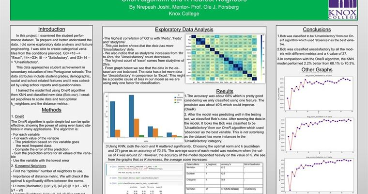
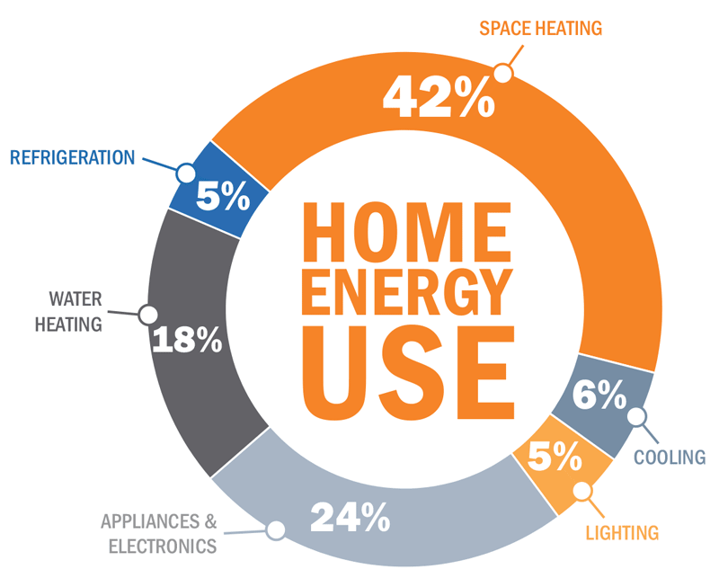

Amazon Rainforest Satellite Classification
Convolutional neural network to classify satellite photos of the Amazon rainforest using VGG-16 transfer learning, fine-tuning, and data augmentation.
// 01. ml & data science
Convolutional neural network to classify satellite photos of the Amazon rainforest using VGG-16 transfer learning, fine-tuning, and data augmentation.

Exploratory data analysis and classification using OneR and KNN algorithms with pipelines for scaling and hyperparameter tuning.
Classify Yelp reviews into 1-star or 5-star categories using CountVectorizer, TF-IDF, and Naive Bayes with a full ML pipeline.
Predict borrower default using Keras and TensorFlow on historical loan data to assess risk for new customers.

Trained Markov chain text generation and implemented A* pathfinding for Pacman maze navigation.
Exploratory data analysis of 911 call data with feature engineering, visualizations using Pandas, Matplotlib, and Seaborn.
Exploratory analysis of bank stock prices through the 2008 financial crisis to 2016 with interactive visualizations.
Statistical analysis exploring how educational attainment affects income levels using regression modeling in R.
Multiple regression model to predict medical expenses from historical individual health and demographic data.

Time series analysis to detect trends and seasonal patterns in home energy consumption data.